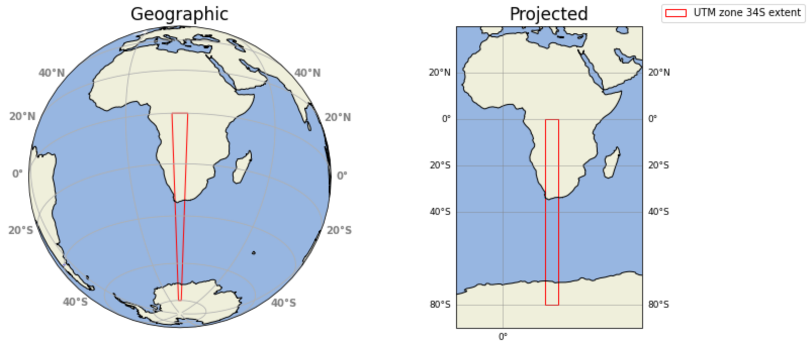

Spatial Data Science with CityJSON (No Internet)#

While an internet connection is NOT necessary you will NEED to have sourced an osm.pbf.
If you would like to do the entire Notebook and estimate the Average solar potential you will NEED to have sourced a ghi.tif.
A ghi.tif raster comes with the LTAy_YearlySum.GeoTiff dataset. These can be harvested from the Global Solar Atlas download section and are available for each country on Earth.
The purpose of this Notebook is to work with the product of osm_LoD1_3DCityModel; a previously created CityJSON city model.
1. allow the user to execute an application of Spatial Data Science
a) population estimation –with a previous census metric population growth rate and projected (future) population are also possible and
b) a measure of Building Volume per Capita2. further applications of Spatial Data Science
calculate percentage homes and population with direct access to on-site renewable energy infrastructure –rooftop photovoltaic panels (PV) and solar water heaters (SWH).
estimate the Annual Average Solar (photovoltaic) Potential, per home.
3. produce an interactive visualization - which a user can navigate, query and share that;
a) colour buildings by type (to easily visualize building stock)
4. propose several Geography and Sustainable Development Education conversation starters for Secondary and Tertiary level students.
#load the magic
%matplotlib inline
import os
from pathlib import Path
import webbrowser
import json
import geojson
import numpy as np
import pandas as pd
import shapely
from shapely.geometry import Polygon, shape, mapping
import city3D
from cjio import cityjson
from osgeo import gdal, osr
import matplotlib.pyplot as plt
#- works fine
import warnings
warnings.filterwarnings('ignore')
The area under investigation is Woodstock, Cape Town. South Africa.
#- change to harvest the appropriate CityJSON
jparams = json.load(open('wStock_param.json'))
#jparams = json.load(open('sRiver_param25m.json'))
#jparams = json.load(open('saao_param.json'))
#cm = cityjson.load(path=jparams['cjsn_solid'])
# With the new 0.10.x syntax:
with open(jparams['cjsn_out'], 'r') as f:
cm = cityjson.reader(f)
print(cm)
CityJSON version = 2.0
EPSG = 32734
bbox = [ 262913.570 6241099.216 -15.730 265653.173 6244328.732 319.680 ]
=== CityObjects ===
|-- TINRelief (1)
|-- Building (3715)
===================
materials = False
textures = False
#- no longer supported
#df = cityjson.to_dataframe(cm)
# Extract data directly from the dictionary we built
data = []
for obj_id, obj_data in cm.j['CityObjects'].items():
# We only want Buildings for this GDF, skipping the terrain (TINRelief)
if obj_data['type'] == 'Building':
row = {'id': obj_id}
row.update(obj_data.get('attributes', {}))
# In your building loop, the footprint was 'row.geometry'
# If you need to re-harvest it from the CityJSON structure:
# For LoD1, we usually grab the 'GroundSurface' or the first floor
# But since you already have gdf_blds, it's easier to use that!
data.append(row)
df = pd.DataFrame(data)
# Harvest the CRS from the cm_obj metadata we set earlier
# Using the new object-oriented method
crs_string = cm.j['metadata']['referenceSystem']
# - we split by the last slash
final_crs = crs_string.split('/')[-1]
#- data wrangling - create GeoDataFrame from CityJSON
#df = cm.to_dataframe()
#- remove the first feature: the terrain
#df = df[1:]
#- harvest the crs
theinfo = cm.get_info()
crs = theinfo[1]
# account for holes
def coords_to_polygon(rings):
if not rings or len(rings) == 0:
return None
outer = rings[0]
# Only pass holes if they actually exist in the list
holes = rings[1:] if len(rings) > 1 else []
return Polygon(shell=outer, holes=holes)
# Convert JSON string to Python list
#df['footprint_coords_list'] = df['footprint'].apply(json.loads)
# Only apply json.loads if the entry is actually a string
df['footprint_coords_list'] = df['footprint'].apply(
lambda x: json.loads(x) if isinstance(x, str) else x
)
# create GeoDataFrameLite | home-baked gdf
gdf = city3D.GeoDataFrameLite(df)
gdf['geometry'] = gdf['footprint_coords_list'].apply(coords_to_polygon)
gdf.crs = crs[7:]
# Drop columns inplace
gdf.drop(columns=['footprint', 'footprint_coords_list'], inplace=True)
gdf.head(2)
| id | osm_id | address | building | building:levels | amenity | building_height | plus_code | ground_height | roof_height | ... | building:use | operator | building:units | social_facility | beds | min_height | bottom_roof_height | rooms | residential | geometry | |
|---|---|---|---|---|---|---|---|---|---|---|---|---|---|---|---|---|---|---|---|---|---|
| 0 | osm_12227309 | 12227309 | The Neighbourgoods Market Woodstock Cape Town | retail | 1.0 | marketplace | 4.1 | 4FRW3FF5+27C | 7.01 | 11.11 | ... | NaN | NaN | NaN | NaN | NaN | NaN | NaN | NaN | NaN | POLYGON ((265023.481 6242993.344, 265021.289 6... |
| 1 | osm_12249345 | 12249345 | Church Square 34 Dickson Street 7915 Woodstoc... | apartments | 6.0 | NaN | 18.1 | 4FRW3FC2+R5G | 9.70 | 27.80 | ... | NaN | NaN | NaN | NaN | NaN | NaN | NaN | NaN | NaN | POLYGON ((264360.391 6242908.633, 264361.062 6... |
2 rows × 21 columns
This community (Woodstock, Salt River and Observatory) is the second oldest community in South Africa. The buildings are old. Many have been repurposed. To account for refurbishment –be as representative as possible– and conform to the OpenStreetMap Guide we typically tag these:
building=* ~ the original purpose + building:use=* ~ the current use.
Furthermore; tagging in this community identifies social housing, social facilities (care home, shelter, etc.) and informal housing (backyard dwelling, shack, etc.) as building / :use=residential. Student accomodation includes the residential=student tag
#- to account for idiosyncratic mapping: replace building= (old function) if building:use= (new purpose) is present
gdf2 = gdf.copy()
#- 1
gdf2.loc[
# The condition to find rows where 'building:use' is 'residential'
# This check ensures the column exists, preventing a KeyError
(gdf2['building:use'] == 'residential') & ~gdf2['building:use'].isna()
if 'building:use' in gdf2.columns else [False] * len(gdf2),
# The column to be updated
'building'] = (
# The value to assign to the 'building' column
gdf2['building:use']
if 'building:use' in gdf2.columns else None
)
#- 2
gdf2.loc[
# The condition to find rows where 'building:use' is 'residential'
# This check ensures the column exists, preventing a KeyError
(gdf2['residential'] == 'student') & ~gdf2['residential'].isna()
if 'residential' in gdf2.columns else [False] * len(gdf2),
# The column to be updated
'building'] = (
# The value to assign to the 'building' column
gdf2['residential']
if 'residential' in gdf2.columns else None
)
1. Spatial Data Science (demography and housing)#
We’ll estimate the population, within our area of interest, and then
calculate the Building Volume Per Capita (BVPC).
While estimating population is well documented; recent investigations to understand overcrowding have led to newer measurements.
The most noteable of these is Building Volume Per Capita (BVPC) (Ghosh, T; et al. 2020). BVPC is the cubic meters of building per person. BVPC tells us how much space one person has per residential living unit (a house / apartment / etc.). It is a proxy measure of economic inequality and a direct measure of housing inequality.
BVPC builds on the work of (Reddy, A and Leslie, T.F., 2013) and attempts to integrate with several Sustainable Development Goals (most noteably: SDG 11: Developing sustainable cities and communities) and captures the average ‘living space’ each person has in their home.
#gdf.head(2)
len(gdf2)
3715
#gdf.plot()
# have a look at the building type and amenities available
gdf2['building'].unique()
array(['retail', 'apartments', 'residential', 'commercial', 'yes',
'university', 'warehouse', 'school', 'house', 'train_station',
'industrial', 'police', 'church', 'office', 'supermarket',
'laboratory', 'mosque', 'terrace', 'college', 'semidetached_house',
'hotel', 'clinic', 'civic', 'library', 'garage', 'shed',
'construction', 'service', 'residence', 'roof', 'kindergarten',
'manufacture', 'parking', 'restaurant', 'garages', 'carport',
'community_centre', 'monastery', 'detached', 'synagogue', 'hall',
'guest_house', 'transportation', 'toilets', 'student'],
dtype=object)
(with population growth rate and population projection possible too)
#- some data wrangling
with pd.option_context("future.no_silent_downcasting", True):
gdf2 = gdf2.assign(**{
col: pd.to_numeric(
gdf2[col].fillna(0).infer_objects(copy=False), errors='coerce'
)
for col in ['building:flats', 'building:units', 'beds', 'rooms', 'building:levels']
if col in gdf2.columns
})
gdf2.head(2)
| id | osm_id | address | building | building:levels | amenity | building_height | plus_code | ground_height | roof_height | ... | building:use | operator | building:units | social_facility | beds | min_height | bottom_roof_height | rooms | residential | geometry | |
|---|---|---|---|---|---|---|---|---|---|---|---|---|---|---|---|---|---|---|---|---|---|
| 0 | osm_12227309 | 12227309 | The Neighbourgoods Market Woodstock Cape Town | retail | 1.0 | marketplace | 4.1 | 4FRW3FF5+27C | 7.01 | 11.11 | ... | NaN | NaN | 0 | NaN | 0 | NaN | NaN | 0 | NaN | POLYGON ((265023.481 6242993.344, 265021.289 6... |
| 1 | osm_12249345 | 12249345 | Church Square 34 Dickson Street 7915 Woodstoc... | apartments | 6.0 | NaN | 18.1 | 4FRW3FC2+R5G | 9.70 | 27.80 | ... | NaN | NaN | 0 | NaN | 0 | NaN | NaN | 0 | NaN | POLYGON ((264360.391 6242908.633, 264361.062 6... |
2 rows × 21 columns
gdf_pop = gdf2.copy()
len(gdf_pop)
3715
#gdf_pop.plot()
gdf_pop['building'].value_counts()
building
house 2876
yes 234
retail 140
industrial 121
semidetached_house 70
garage 59
commercial 39
apartments 31
office 19
school 17
residential 15
church 12
manufacture 8
roof 7
service 7
carport 6
terrace 5
warehouse 5
detached 4
kindergarten 4
police 3
garages 2
restaurant 2
hall 2
civic 2
supermarket 2
hotel 2
college 2
mosque 2
train_station 2
monastery 1
toilets 1
transportation 1
guest_house 1
university 1
synagogue 1
shed 1
community_centre 1
construction 1
laboratory 1
parking 1
clinic 1
residence 1
library 1
student 1
Name: count, dtype: int64
This area is urban with single and 2-storey level housing units. To estimate population is thus pretty straight forward.
On average there are roughly 4 people per building:house in this area.
social housing is tagged building:residential with the 3 people per building or building:flats * 3 if the building is an apartment-type complex
We will execute the calculation programmatically. Fill in the relevant variables in the cell below
#- average number of residents per formal house
f_house = 4
#- average number of residents per informal structure
inf_structure = 3
Furthermore:
social housing is tagged
building:residentialwith the number of occupants iether the number of informal structure occupants orbuilding:flats * inf_structureA
social_facility(carehome, shelter, etc.) harvests the bedskey:valuepair.building:apartmentsharvests thebuilding:flatskey:valuepair (the number of units) to calculate*3people perStudent accomodation:
University owed: is tagged
building:dormitorywithresidential:universityand harvests thebedsorrooms‘key:value’ pair.Private for-profit: is tagged
building:residentialor:dormitorywithresidential:studentand then harvests thebuilding:flatsor:rooms‘key:value’ pair (the number of units) to calculate*1people per apartment; iflevel: > 1else*3people in a house share.
The tagging scheme and numbers is based on how your community is mapped and local knowledge
c = gdf_pop.columns
def pop(row):
#- formal house
if row['building'] == 'house' or row['building'] == 'semidetached_house':
return f_house
if row['building'] == 'terrace' or row['building'] == 'terraced':
if 'building:units' in c and row['building:units'] != 0:
return row['building:units'] * f_house
else:
f_house
#- informal structure (shack)
if row['building'] == 'cabin':
return inf_structure
#- in this case social housing
if row['building'] == 'residential' and 'social_facility' in c and row['social_facility'] is np.nan:
if row['building:levels'] > 1:
if 'rooms' in c and row['rooms'] != 0:
return row['rooms']
if 'building:flats' in c and row['building:flats'] != 0:
return row['building:flats'] * inf_structure
else:
return inf_structure
#-- social facility [shelter / carehome]
if row['building'] == 'residential' and row['social_facility'] is not np.nan:
if 'building:units' in c and row['building:units'] != 0:
return row['building:units'] * inf_structure
else:
return row['beds']
#- formal apartment
if row['building'] == 'apartments':
return row['building:flats'] * 3
#- private student residence
if row['building'] == 'student':
if row['building:levels'] > 1:
return row['building:flats']
else:
return 3
# university owned student residence
if row['building'] == 'dormitory' and row['residential'] == 'university':
if row['building:levels'] > 1:
if 'rooms' in c and row['rooms'] != 0:
return row['rooms']
if 'beds' in c and row['beds'] != 0:
return row['beds']
else:
return 3
gdf_pop['pop'] = gdf_pop.apply(lambda x: pop(x), axis=1)
est_pop = int(gdf_pop['pop'].sum())
print('The estimated population is:', est_pop)
The estimated population is: 17062
Statistics South Africa (STATSA) does not typically release official statistics at a suburb level but City of Cape Town generously publishes suburb profiles as Open Data.
These numbers are based on disaggregated Statistics South Africa (STATSA) Census 2011.
Woodstock 12 656 (6 577: salt river and 9 207: observatory).
We can calculate the annual population growth rate using the formula for Annual population growth:
$$r = \frac{\ln{[\frac{End Population}{Start Population}}]}{n} * 100 = \frac{\ln{[\frac{17 062}{9345}}]}{12} * 100 = 2.49%$$
It is possible to execute the calculation programmatically. Fill in the relevant variables in the cell below
#- previous population
start_population = 12656
#- period in years from the previous census
years = 12
#-execute
r = (np.log(est_pop/start_population)/years) * 100
print('population growth rate of approximately:', round(r, 2), '%')
population growth rate of approximately: 2.49 %
To conclude; we can project into the future with a very basic formula to estimate the population x-years from now:
$$p = P_o * (1 + r)^{t} = p = 17062 * (1 + 0.0248)^{10} = 21 818$$
It is possible to execute the calculation programmatically. Fill in the variables in the cell below
#- period in years from now
years = 10
#- account for non-residential areas without failure
#- helper function
def safe_population_estimate(est_pop, r, years):
try:
p = est_pop * (1 + (r / 100))**years
return int(p)
except Exception as e:
print(f"Population estimate failed: {e}")
return None # keeps notebook running
#- execute function
p = safe_population_estimate(est_pop, r, years)
#- shows error and moves on
if p is not None:
print(f"estimated population {years} years from now: {p}")
estimated population 10 years from now: 21818
gdf_pop['area'] = gdf_pop['geometry'].apply(lambda geom: geom.area if geom else 0)
gdf_pop['volume'] = gdf_pop['area'] * gdf_pop['building_height']
#- remove the volume of the ground floor (unoccupied) when building:levels > 7 [this is an arbitrary number based on local knowledge]
#- typically the space is reserved for some other function: retail, etc.
gdf_pop['volume'] = [
(row['volume'] - row['area'] * 2.8) if (
('social_facility' not in gdf_pop.columns or pd.isna(row.get('social_facility')))
and row['building:levels'] > 7
and row['building'] in ['residential', 'apartments', 'student']
) else row['volume']
for _, row in gdf_pop.iterrows()
]
gdf_pop['bvpc'] = np.where(
gdf_pop['pop'] > 0,
gdf_pop['volume'] / gdf_pop['pop'],
np.nan
)
gdf_pop.tail(2)
| id | osm_id | address | building | building:levels | amenity | building_height | plus_code | ground_height | roof_height | ... | beds | min_height | bottom_roof_height | rooms | residential | geometry | pop | area | volume | bvpc | |
|---|---|---|---|---|---|---|---|---|---|---|---|---|---|---|---|---|---|---|---|---|---|
| 3713 | osm_1340498943 | 1340498943 | Balfour Street Woodstock Cape Town | semidetached_house | 1.0 | NaN | 4.1 | 4FRW3C8X+7VX | 55.90 | 60.00 | ... | 0 | NaN | NaN | 0 | NaN | POLYGON ((264277.101 6242210.386, 264272.196 6... | 4.0 | 91.279151 | 374.244519 | 93.56113 |
| 3714 | osm_1423081172 | 1423081172 | NaN | warehouse | 1.0 | NaN | 4.1 | 4FRW3CFX+M65 | 5.07 | 9.17 | ... | 0 | NaN | NaN | 0 | NaN | POLYGON ((264084.947 6243146.256, 264079.339 6... | NaN | 1068.337435 | 4380.183484 | NaN |
2 rows × 25 columns
print(gdf_pop['bvpc'].describe())
count 2981.000000
mean 145.565013
std 100.922068
min 30.091331
25% 89.678595
50% 116.854422
75% 165.813949
max 2315.100321
Name: bvpc, dtype: float64
bvpc = round(gdf_pop['volume'].sum() / est_pop, 3)
print('Building Volume Per Capita (BVPC):', bvpc)
Building Volume Per Capita (BVPC): 272.206
This BVPC value is for all the buildings; we only want buildings people live in (homes).
And we can seperate building:house from building:cabin and building:residential to undertand the differences between formal and informal housing in this area.
We want to understand the living space (the cubic-meter BVPC value) each person has in their home
formal = gdf_pop[gdf_pop["building"].isin(['house', 'semidetached_house', 'terrace', 'terraced', 'apartments'])].copy()
f_pop = int(formal['pop'].sum())
informal = gdf_pop[gdf_pop["building"].isin(['residential', 'cabin'])].copy()
inf_pop = int(informal['pop'].sum())
#- student
stu = gdf_pop[gdf_pop["building"].isin(['student', 'dormitory'])].copy()
stu_pop = int(stu['pop'].sum())
bvpc_formal = round(formal['volume'].sum() / formal['pop'].sum(), 3)
bvpc_informal = round(informal['volume'].sum() / informal['pop'].sum() if informal['pop'].sum() != 0 else 0, 3)
bvpc_stu = round(stu['volume'].sum() / stu['pop'].sum() if stu['pop'].sum() != 0 else 0, 3)
print('FORMAL: Population: ', f_pop, ' with Building Volume Per Capita (BVPC):', bvpc_formal)
print('')
print('STUDENT RESIDENCE: Population: ', stu_pop, ' with Building Volume Per Capita (BVPC):', bvpc_stu)
print('')
print('INFORMAL: Population: ', inf_pop, ' with Building Volume Per Capita (BVPC)', bvpc_informal)
FORMAL: Population: 15738 with Building Volume Per Capita (BVPC): 142.163
STUDENT RESIDENCE: Population: 45 with Building Volume Per Capita (BVPC): 109.496
INFORMAL: Population: 1279 with Building Volume Per Capita (BVPC) 77.777
These are LoD1 3D City Models and works well in these types of areas.
LoD2 would offer a more representative BVpC (Ghosh, T; et al. 2020) value; when the complexity of the built environment increases.
Think about a house with living space in the roof structure, so called ‘attic living’, or an apartment / residential building with different levels, loft apartments and/or units in the turrets of a building.
consider: geo3D seperates building:cabin from building:residential to more precisely represent informal structures which typical do not have roof trussess but account for social housing that does
2. Further examples of Spatial Data Science (renewable energy):#
Let’s attempt to understand the % of homes and population served with renewable energy.
SDG indicators are typically calculated at region and national scales.
Here, because we are working with highly detailed, local data, we can explore what a Tier 3 local indicator might look like at a neighbourhood level.
In this section 3. we evaluate SDG 7: Ensure access to affordable, reliable, sustainable and modern energy for all at a community level and estimate the proportion of residential units and population that have direct access to on-site renewable energy infrastructure –rooftop photovoltaic panels (PV) and solar water heaters (SWH).
a. Percentage of households served by rooftop renewable energy
b. Percentage of the population served by rooftop renewable energyc. And then we go even further to estimate the Annual Solar Potential in MWh (theoretical maximum electricity) that homes can harvest from the sun over the course of one year.
PLEASE SUPPLY YOUR OWN osm.pbf.
Either crop an area directly from OpenStreetMap with the official tool, select a predefined area from any number of providers, such as Geofabrik, or…
# Input OSM PBF file
input_pbf = "./data/CapeTown.osm.pbf"
#- execute function from city3D and return GeoDataFrameLite | home-baked gdf
aoi = city3D.extract_boundaries_by_name(input_pbf, jparams)
ageoms = aoi['geometry'].tolist()
#- combine all geometries into a single union
combined_ageom = shapely.unary_union(ageoms) # returns Polygon or MultiPolygon
#- compute bounding box
minx, miny, maxx, maxy = combined_ageom.bounds
#solar = city3D._harvestSolar(input_pbf, jparams, minx, miny, maxx, maxy, crs[7:])
solar = city3D._harvestSolar(input_pbf, minx, miny, maxx, maxy, crs[7:])
solar.head(2)
| geometry | osm_id | other_tags | z_order | |
|---|---|---|---|---|
| 0 | POLYGON ((265277.85421120946 6242363.049765201... | 1045126952 | "generator:method"=>"photovoltaic","generator:... | 0 |
| 1 | POLYGON ((265272.3012488816 6242352.679363036,... | 1045126953 | "generator:method"=>"photovoltaic","generator:... | 0 |
# Convert valid strings, ignore None/NaN
def safe_convert(tag_string):
if isinstance(tag_string, str):
try:
# Replace "=>" with ":" and fix newlines
formatted_string = "{" + tag_string.replace("=>", ":").replace("\n", " ") + "}"
return json.loads(formatted_string) # Parse safely
except json.JSONDecodeError:
return {} # Return empty dict on failure
return {} # Return empty dict if NaN or None
# Apply conversion function
solar["tags"] = solar["other_tags"].apply(safe_convert)
# Extract values safely - Normalize the 'tags' column to create a new DataFrame
tags_df = pd.json_normalize(solar['tags'])
# Join the new columns back to the original GeoDataFrame
solar = pd.concat([solar, tags_df], axis=1)
# (Optional) Drop the original 'tags' column
solar = solar.drop(columns=['other_tags'])
# Ensure a single 'osm_id' column
if 'osm_id' in solar.columns:
if 'osm_way_id' in solar.columns:
solar['osm_id'] = [o if pd.notna(o) else w
for o, w in zip(solar['osm_id'], solar['osm_way_id'])]
solar = solar.drop(columns=['osm_way_id'])
elif 'osm_way_id' in solar.columns:
solar = solar.rename(columns={'osm_way_id': 'osm_id'})
aoi = aoi.to_crs(crs[7:])
#gdf = gdf[gdf.geometry.apply(lambda x: x.within(aoi.unary_union))]
solar = solar[solar.geometry.apply(lambda x: x.within(shapely.unary_union(aoi.geometry)))]
#solar.crs = "EPSG:4326"
#solar = solar.to_crs(crs[7:])
solar.head(2)
| geometry | osm_id | z_order | tags | generator:method | generator:output:electricity | generator:source | generator:type | location | power | generator:output:hot_water | operator | operator:type | operator:wikidata | |
|---|---|---|---|---|---|---|---|---|---|---|---|---|---|---|
| 68 | POLYGON ((263921.6015001162 6242122.983059727,... | 1097018218 | 0 | {'generator:method': 'thermal', 'generator:out... | thermal | NaN | solar | solar_thermal_collector | rooftop | generator | yes | NaN | NaN | NaN |
| 69 | POLYGON ((263923.64292556536 6242122.734229784... | 1097018219 | 0 | {'generator:method': 'thermal', 'generator:out... | thermal | NaN | solar | solar_thermal_collector | rooftop | generator | yes | NaN | NaN | NaN |
#- the number of renewable in the AREA
solar['generator:method'].value_counts()
generator:method
thermal 25
photovoltaic 23
Name: count, dtype: int64
# join (link) rooftop renewable energy to the appropriate bld
def buildings_with_solar(gdf_buildings, gdf_solar):
# Prepare output arrays
solar_ids_per_building = [[] for _ in range(len(gdf_buildings["geometry"]))]
solar_types_per_building = [[] for _ in range(len(gdf_buildings))]
#pop = [[] for _ in range(len(gdf_buildings))]
for i, b_geom in enumerate(gdf_buildings["geometry"]):
for j, s_geom in enumerate(gdf_solar["geometry"]):
#if b_geom.intersects(s_geom):
if b_geom.contains(s_geom):
solar_ids_per_building[i].append(gdf_solar["osm_id"].iloc[j])
solar_types_per_building[i].append(gdf_solar["generator:method"].iloc[j])
#pop[i].append(gdf_solar["generator:method"].iloc[j])
#- keep only unique values
#unique_methods_per_building = [list(set(lst)) for lst in solar_types_per_building]
gdf_buildings["solar_ids"] = solar_ids_per_building
gdf_buildings["generator:method"] = solar_types_per_building #unique_methods_per_building
gdf_buildings["has_solar"] = [len(lst) > 0 for lst in solar_ids_per_building]
gdf_buildings["solar_ids"] = solar_ids_per_building
return gdf_buildings
blds = buildings_with_solar(gdf_pop, solar)
blds.head(2)
| id | osm_id | address | building | building:levels | amenity | building_height | plus_code | ground_height | roof_height | ... | rooms | residential | geometry | pop | area | volume | bvpc | solar_ids | generator:method | has_solar | |
|---|---|---|---|---|---|---|---|---|---|---|---|---|---|---|---|---|---|---|---|---|---|
| 0 | osm_12227309 | 12227309 | The Neighbourgoods Market Woodstock Cape Town | retail | 1.0 | marketplace | 4.1 | 4FRW3FF5+27C | 7.01 | 11.11 | ... | 0 | NaN | POLYGON ((265023.481 6242993.344, 265021.289 6... | NaN | 822.268438 | 3371.300598 | NaN | [] | [] | False |
| 1 | osm_12249345 | 12249345 | Church Square 34 Dickson Street 7915 Woodstoc... | apartments | 6.0 | NaN | 18.1 | 4FRW3FC2+R5G | 9.70 | 27.80 | ... | 0 | NaN | POLYGON ((264360.391 6242908.633, 264361.062 6... | 315.0 | 1419.195321 | 25687.435310 | 81.547414 | [] | [] | False |
2 rows × 28 columns
#--we only want buildings people live in (homes). building=house or =apartment or =residential, etc.
blds = blds[blds["building"].isin(['house', 'semidetached_house', 'terrace', 'terraced', 'apartments', 'residential', 'dormitory', 'cabin', 'student', 'garage'])].copy()
2. a) Household rooftop solar#
$$ \text{% homes with renewable energy} = \frac{\text{Number of dwellings with mapped solar PV and SWH}}{\text{Total number of dwellings}} \times 100 $$
#- harvest columns
with_solar = sum(blds["has_solar"])
pop = est_pop #gdf["pop"]
total_homes = len(blds)
solHms = round((with_solar / total_homes) * 100, 2)
print('\033[1m Percentage homes, \033[0m in', jparams['FocusArea'],', with rooftop photovoltaic panels (PV) and solar water heaters (SWH):', solHms)
Percentage homes, in Woodstock , with rooftop photovoltaic panels (PV) and solar water heaters (SWH): 0.79
building=garage building type. Go to Cell ±33 (above) to exclude this building type from the estimate.
2. b) Rooftop solar population#
$$ \text{% population with renewable energy} = \frac{\text{Number of residents with mapped solar PV and SWH}}{\text{Estimated population}} \times 100 $$
pop_total = blds["pop"].sum()
pop_solar = blds["pop"][blds["has_solar"]].sum()
solPop = round(pop_solar / pop_total * 100, 2)
print('\033[1m Percentage population, \033[0m in', jparams['FocusArea'],', with rooftop photovoltaic panels (PV) and solar water heaters (SWH):', solPop)
Percentage population, in Woodstock , with rooftop photovoltaic panels (PV) and solar water heaters (SWH): 0.54
# number of solar renewable on HOMES
blds['generator:method'].explode().value_counts()
generator:method
thermal 22
photovoltaic 13
Name: count, dtype: int64
3. c) Solar potential (MWh)#
In this section, we attempt to understand how much ‘fuel’ a rooftop can get from the sun.
PLEASE SUPPLY YOUR OWN ghi.tif. The ghi.tif raster comes with the LTAy_YearlySum.GeoTiff dataset.
These can be harvested from the Global Solar Atlas –a World Bank Group and ESMAP project– download section and are available for each country on Earth.
We will query the Global Horizontal Irradiation (GHI) dataset. This high-resolution raster uses a combination of satellite observations and advanced meteorological models to tell us the ‘solar weight’ hitting our neighborhood.
Source: The Global Solar Atlas GHI Raster provides a ~20-year historical average of solar radiation. This ensures our communities solar potential is based on long-term climate trends rather than a single year of weather.
Goal: To calculate the Annual Total GHI (kWh/m2/year). This value tells us the cumulative ‘solar pressure’ hitting our rooftops over an entire year, which we then use to calculate how many Megawatt-hours (MWh) of clean electricity our neighborhood can generate.
#- where is the GHI.tif
raster_file = "./raster/GHI.tif"
#- harvest GHI value from raster
# 1. Setup Raster Access once (Outside the loop)
ds = gdal.Open(raster_file)
gt = ds.GetGeoTransform()
rb = ds.GetRasterBand(1)
# Setup Transformation (OSM/GDF 4326 -> Raster CRS)
target = osr.SpatialReference()
target.ImportFromWkt(ds.GetProjection())
source = osr.SpatialReference()
source.ImportFromEPSG(4326)
transform = osr.CoordinateTransformation(source, target)
def get_ghi_per_building(geom):
"""
Queries the raster at the specific centroid of the provided geometry.
Uses the pre-loaded transform and raster band for speed.
"""
if not geom:
return 0.0
# Get the specific centroid for this building
centroid = geom.centroid
# Transform point to Raster's CRS
# Note: TransformPoint expects (x, y) which is (lon, lat) in 4326
point = transform.TransformPoint(centroid.x, centroid.y)
# Map Map Coordinates to Pixel Coordinates
# px = (X_geo - X_origin) / PixelWidth
# py = (Y_geo - Y_origin) / PixelHeight
px = int((point[0] - gt[0]) / gt[1])
py = int((point[1] - gt[3]) / gt[5])
try:
# Read a 1x1 window at the calculated pixel coordinates
structval = rb.ReadAsArray(px, py, 1, 1)
return float(structval[0][0])
except:
return 0.0
# 2. Execution
# Ensure your GDF is in 4326 to match the transformer logic
blds = blds.to_crs('EPSG:4326')
# Apply the function to each row's unique geometry
blds['ghi_yearly'] = blds['geometry'].apply(get_ghi_per_building)
print("Annual Average GHI:", round(blds['ghi_yearly'].mean(),2) ,"kWh/m²/year")
Annual Average GHI: 1891.36 kWh/m²/year
We use a simplified formula to provide a clear baseline.
$$ \text{Potential (MWh)} = \frac{(\text{Surface Area} \times \text{utilization factor}) \times \text{GHI}_{\text{annual}} \times 0.2}{1000} $$
Theoretical Framework: The annual energy output of a photovoltaic system (E) is determined by the product of the total solar resource (GHI), the active area of the array (A), and the system’s overall efficiency (η), adjusted by a Performance Ratio (PR) to account for real-world losses. — based on NREL (2022) & IEC 61724-1. We then adapt this formula and represents a combined value of 25% nominal panel efficiency and a 0.80 Performance Ratio with a single 0.20 system efficiency value and account for usable area, a heuristic for gabled roofs.
Fill in the utilization_factor below
As a ‘rule-of-thumb’ a community with traditional gabled houses: utilization_factor = 0.4 (less than half), while a high-density suburb with flat-roofed apartments: utilization_factor = 0.6
# on average, how much of the roof faces the sun? Adjust based on roof types
utilization_factor = 0.4
# Potential (MWh) = (Area * GHI_Yearly * 0.20) / 1000
blds['solar_mwh'] = ((blds['area'] * utilization_factor) * blds['ghi_yearly'].mean() * 0.20) / 1000
blds.head(2)
| id | osm_id | address | building | building:levels | amenity | building_height | plus_code | ground_height | roof_height | ... | geometry | pop | area | volume | bvpc | solar_ids | generator:method | has_solar | ghi_yearly | solar_mwh | |
|---|---|---|---|---|---|---|---|---|---|---|---|---|---|---|---|---|---|---|---|---|---|
| 1 | osm_12249345 | 12249345 | Church Square 34 Dickson Street 7915 Woodstoc... | apartments | 6.0 | NaN | 18.1 | 4FRW3FC2+R5G | 9.70 | 27.80 | ... | POLYGON ((18.450818004404262 -33.9279241023017... | 315.0 | 1419.195321 | 25687.435310 | 81.547414 | [] | [] | False | 1899.0 | 214.737093 |
| 2 | osm_12286281 | 12286281 | Cissie Gool House Victoria Walk Woodstock 7925... | residential | 4.0 | NaN | 12.5 | 4FRW3C9X+5F5 | 29.01 | 41.51 | ... | POLYGON ((18.449417896294207 -33.9317294035119... | 930.0 | 5308.040820 | 66350.510249 | 71.344635 | [] | [] | False | 1895.0 | 803.154604 |
2 rows × 30 columns
average_solar_potential = blds['solar_mwh'].mean()
print("\033[1mThe average solar potential, per home\033[0m, for", jparams['FocusArea'], "is:", round(average_solar_potential, 2), "MWh/year")
The average solar potential, per home, for Woodstock is: 19.89 MWh/year
building=garage building type. Go to Cell ±33 to exclude this building type from the estimate.
What does this MWh/year value mean?
To put the value in context, 15 MWh/year:
is enough to provide 100% of the electricity for 4 to 5 average UK homes (which use ~3.4 MWh each) or 1.5 average US homes (~10.7 MWh each)
is enough power to drive an Electric Vehicle for 75,000 kilometers –that’s almost two full trips around the Earth.
roughly saves 10 metric tons of Carbon Dioxide from entering the atmosphere.
In
Cell ±33we excluded non-residential building types=office, commercial, retail, warehouse, industrial, etc.from the analysis.Cape Town typically yields ~1.6–1.7 MWh per installed kWp per year; the higher per-household values reported here reflect rooftop potential derived from available area –that considers a
utilization_factor, not a 1 kWp system.A 1 kWp solar PV system requires approximately 5–8 m² of panel area (e.g. panels of roughly 1 m × 1.7 m, depending on technology).
We are NOT asking: How much energy (MWh/year) would a single 1 kWp PV system generate on a roof?
We are asking: How much energy (MWh/year) could these roofs harvest, given their available area and a realistic utilization factor?The BVPC Warning applies here too. These are LoD1 3D City Models, which represent buildings as simple extrusions.
LoD2 models —that capture roof form (e.g. gable, hipped, mansard, domes)— would provide more representative estimates of both BVPC and Average Annual Solar Potential. In such cases, the
utilization_factorbecomes less critical, as usable roof geometry is explicitly modelled.
3. Interactive Visualization#
You might want to create and share an html visualization.
In this example we identify building stock by color but you are limited only through your imagination and the data you have access too
gdf2.crs
<Projected CRS: EPSG:32734>
Name: WGS 84 / UTM zone 34S
Axis Info [cartesian]:
- E[east]: Easting (metre)
- N[north]: Northing (metre)
Area of Use:
- name: Between 18°E and 24°E, southern hemisphere between 80°S and equator, onshore and offshore. Angola. Botswana. Democratic Republic of the Congo (Zaire). Namibia. South Africa. Zambia.
- bounds: (18.0, -80.0, 24.0, 0.0)
Coordinate Operation:
- name: UTM zone 34S
- method: Transverse Mercator
Datum: World Geodetic System 1984 ensemble
- Ellipsoid: WGS 84
- Prime Meridian: Greenwich
|
 |
Fill in the proper espg in the cell below
#- fill <Projected CRS: EPSG:32734> from above here epsg = EPSG:32734
epsg = 'EPSG:4326'
# -- get the location for pydeck
#- re-project to geographic
gdf = gdf2.to_crs(epsg)
# combine all geometries
geom = shapely.unary_union(gdf['geometry'])
# centroid
xy = (geom.centroid.x, geom.centroid.y)
# bounding box
minx, miny, maxx, maxy = geom.bounds
#bbox = [minx, miny, maxx, maxy]
# have a look at the building type and amenities available
gdf['building'].unique()
array(['retail', 'apartments', 'residential', 'commercial', 'yes',
'university', 'warehouse', 'school', 'house', 'train_station',
'industrial', 'police', 'church', 'office', 'supermarket',
'laboratory', 'mosque', 'terrace', 'college', 'semidetached_house',
'hotel', 'clinic', 'civic', 'library', 'garage', 'shed',
'construction', 'service', 'residence', 'roof', 'kindergarten',
'manufacture', 'parking', 'restaurant', 'garages', 'carport',
'community_centre', 'monastery', 'detached', 'synagogue', 'hall',
'guest_house', 'transportation', 'toilets', 'student'],
dtype=object)
#-- colour the building stock based on building:type
## while we can color with a built-in pydeck function
#color_lookup = pdk.data_utils.assign_random_colors(build_df['building'])
# Assign a color
#build_df['color'] = build_df.apply(lambda row: color_lookup.get(row['building']), axis=1)
## we define specific colors
def color(bld):
#- formal house
if bld == 'house' or bld == 'semidetached_house':
return [255, 255, 204] #-grey
#- informal structure / social housing
if bld == 'residential' or bld == 'dormitory' or bld == 'cabin':
return [119, 3, 252] #-purple
if bld == 'apartments':
return [252, 194, 3] #-orange
if bld == 'garage' or bld == 'parking':
return [3, 132, 252] #-blue
if bld == 'retail' or bld == 'supermarket':
return [253, 141, 60]
if bld == 'office' or bld == 'commercial':
return [185, 206, 37]
if bld == 'school' or bld == 'kindergarten' or bld == 'university' or bld == 'college':
return [128, 0, 38]
if bld == 'clinic' or bld == 'doctors' or bld == 'hospital':
return [89, 182, 178]
if bld == 'community_centre' or bld == 'service' or bld == 'post_office' or bld == 'hall' \
or bld == 'townhall' or bld == 'police' or bld == 'library':
return [181, 182, 89]
if bld == 'warehouse' or bld == 'industrial':
return [193, 255, 193]
if bld == 'restaurant' or bld == 'hotel':
return [139, 117, 0]
if bld == 'place_of_worship' or bld == 'church' or bld == 'mosque':
return [225, 225, 51]
else:
return [255, 255, 204]
gdf["fill_color"] = gdf['building'].apply(lambda x: color(x))
#- look
gdf.head(2)
| id | osm_id | address | building | building:levels | amenity | building_height | plus_code | ground_height | roof_height | ... | operator | building:units | social_facility | beds | min_height | bottom_roof_height | rooms | residential | geometry | fill_color | |
|---|---|---|---|---|---|---|---|---|---|---|---|---|---|---|---|---|---|---|---|---|---|
| 0 | osm_12227309 | 12227309 | The Neighbourgoods Market Woodstock Cape Town | retail | 1.0 | marketplace | 4.1 | 4FRW3FF5+27C | 7.01 | 11.11 | ... | NaN | 0 | NaN | 0 | NaN | NaN | 0 | NaN | POLYGON ((18.458007895798467 -33.9273091007377... | [253, 141, 60] |
| 1 | osm_12249345 | 12249345 | Church Square 34 Dickson Street 7915 Woodstoc... | apartments | 6.0 | NaN | 18.1 | 4FRW3FC2+R5G | 9.70 | 27.80 | ... | NaN | 0 | NaN | 0 | NaN | NaN | 0 | NaN | POLYGON ((18.450818004404262 -33.9279241023017... | [252, 194, 3] |
2 rows × 22 columns
Because we do NOT harvest an online basemap for the pseudo-3D visualisation we need to create our own.
We add features to our home-baked visualization; namely: roads and parks. We get this from OpenStreetMap as well..
#- harvest ROADS
gdf_roads = city3D.process_osm_geoms(
"/vsimem/roads.geojson",
input_pbf,
"lines",
"highway IS NOT NULL",
combined_ageom
)
gdf_roads.head(2)
| geometry | highway | name | osm_id | z_order | bridge | lanes | layer | maxspeed | name:etymology:wikidata | ... | crossing | tactile_paving | placement:backward | placement:forward | cycleway:right | crossing:island | parking:left | parking:left:orientation | indoor | level | |
|---|---|---|---|---|---|---|---|---|---|---|---|---|---|---|---|---|---|---|---|---|---|
| 0 | LINESTRING (18.4342734 -33.9196189, 18.4321211... | motorway | Nelson Mandela Boulevard | 4252036 | 29 | yes | 2 | 1 | 80 | Q8023 | ... | ||||||||||
| 1 | LINESTRING (18.4330495 -33.9248143, 18.4330235... | motorway | Nelson Mandela Boulevard | 4252037 | 39 | yes | 2 | 2 | 80 | Q8023 | ... |
2 rows × 120 columns
#- LEISURE (parks, gardens, nature reserves)
gdf_green = city3D.process_osm_geoms(
"/vsimem/green.geojson",
input_pbf,
"multipolygons",
#"leisure IN ('park', garden', 'nature_reserve', 'common', 'grass', 'pitch')",
"leisure IS NOT NULL",
combined_ageom
)
green_types = ['park', 'garden', 'nature_reserve', 'common', 'grass', 'pitch']
# This checks: "Is the value in the leisure column one of the items in my list?"
gdf_green = gdf_green[gdf_green['leisure'].isin(green_types)].copy()
gdf_green.head(2)
ERROR 1: Non closed ring detected.
ERROR 1: Non closed ring detected.
ERROR 1: Non closed ring detected.
ERROR 1: Non closed ring detected.
ERROR 1: Non closed ring detected.
ERROR 1: Non closed ring detected.
ERROR 1: Non closed ring detected.
ERROR 1: Non closed ring detected.
ERROR 1: Non closed ring detected.
| barrier | building | geometry | leisure | name | osm_id | sport | surface | wikidata | wikimedia_commons | ... | charge:adult | charge:child | fee | swimming_pool | garden:style | garden:type | hoops | phone | contact:facebook | opening_hours | |
|---|---|---|---|---|---|---|---|---|---|---|---|---|---|---|---|---|---|---|---|---|---|
| 3 | MULTIPOLYGON (((18.4392484 -33.9360002, 18.438... | pitch | 23872559 | multi | ... | ||||||||||||||||
| 5 | MULTIPOLYGON (((18.4423637 -33.9280685, 18.442... | park | Trafalgar Park | 32441919 | ... |
2 rows × 41 columns
file = './result/interactiveAlt.html' # will name and save html here
city3D.create_maplibre_3Dviz(
file,
buildings_gdf=gdf,
roads_gdf=gdf_roads,
green_gdf=gdf_green,
center=xy,
offline=True # toggle home-bakery
)
#- uncomment. will open in a new browser window. Jupyter security restrictions prevent opening here.
webbrowser.open('file://' + os.path.realpath(file))
True
on a laptop without a mouse:
trackpad left-click drag-leftand-right;Ctrl left-click drag-up,-down,-leftand-rightto rotate and so-on and+next to Backspace zoom-in and-next to+zoom-out.
Now you do your community. ~ If your area needs OpenStreetMap data and you want to contribute please follow the Guide.
4. Possible Secondary and Tertiary level ‘conversations starters’#
Topic |
Secondary Level Questions |
Tertiary Level Questions |
|---|---|---|
Basic Understanding and Observations |
- What types of buildings are most common in the area (houses, apartments, retail, etc.)? |
- How does the building stock composition (e.g., ratio of houses) correlate with the population? demographics (e.g., age distribution, household size) for the area will strengthen the analysis! |
Spatial Relationships and Impacts |
- How does the location of residential areas compare to the location of retail and commercial areas? |
- Evaluate the accessibility of essential services (e.g., healthcare, education) in relation to the population and building types. |
Socioeconomic and Environmental Considerations |
- Are there any correlations between the types of housing available and the household size? additional demographics (e.g., income level) for the area will strengthen the analysis! |
- How does the current building stock support or hinder sustainable development goals (e.g., energy efficiency, reduced carbon footprint)? |
Future Planning and Development |
- Based on the current building stock and population metrics, what areas might benefit from additional housing or commercial development? |
- How might different zoning regulations impact the distribution of residential, commercial, and industrial buildings in the future? |
Quantitative and Qualitative Research |
- Design a research study to investigate the impact of building type diversity on community wellbeing. What methodologies would you use? |